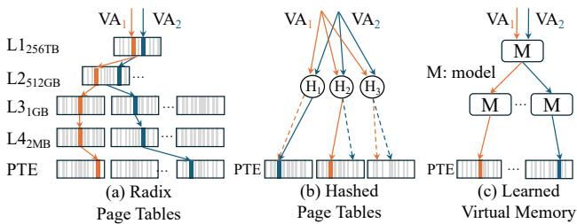
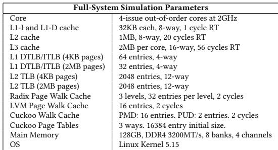
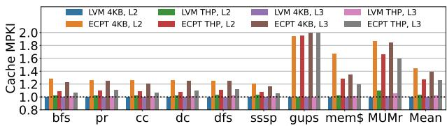

Learning to Walk: Architecting Learned Virtual Memory Translation 图表详解¶
Figure 1:Address translations schemes.LVMavoids both the long sequential page walks of radix page tables and the high collision rates and parallel accesses of hashed page tables.¶

- 图片展示了三种虚拟内存地址翻译方案的对比：(a) Radix Page Tables、(b) Hashed Page Tables 和 (c) Learned Virtual Memory (LVM)，旨在说明 LVM 如何规避前两种方案的固有缺陷。
- 在 (a) Radix Page Tables 中，地址翻译依赖于多级树状结构。图中从上至下依次为 L1（256TB）、L2（512GB）、L3（1GB）、L4（2MB）和 PTE（页表项）。虚拟地址 VA₁ 和 VA₂ 需要通过逐层指针追踪才能定位到最终的 PTE，这导致了长序列的页面遍历（long sequential page walks），是性能瓶颈。
- 在 (b) Hashed Page Tables 中，虚拟地址 VA₁ 和 VA₂ 通过哈希函数映射到多个候选位置 H₁、H₂、H₃。虽然理论上可单次访问，但实际中常因哈希冲突（high collision rates） 而需进行多次并行探测（如图中虚线所示），增加了内存流量和缓存污染（parallel accesses）。
- 在 (c) Learned Virtual Memory (LVM) 中，虚拟地址 VA₁ 和 VA₂ 直接输入一个或多个模型 M。这些模型基于应用的虚拟地址空间分布进行学习，能直接预测 PTE 的物理位置，从而实现单次访问翻译（single-access translation），避免了前两者的缺点。
- 三者核心差异总结如下：
| 特性 | Radix Page Tables | Hashed Page Tables | Learned Virtual Memory (LVM) |
|---|---|---|---|
| 访问模式 | 顺序多级指针追踪 | 并行哈希探测 | 单次模型预测 |
| 主要开销 | 长延迟的序列访问 | 高碰撞率与并行内存流量 | 极低碰撞率，高效单次访问 |
| 结构基础 | 固定层级树 | 哈希表 | 学习型索引（层次化线性模型） |
| 关键优势 | 空间局部性好，易于缓存高层级 | 可并行化，理论单次访问 | 近理想性能，适应性强，资源效率高 |
- 图片下方文字明确指出，LVM 避免了 Radix Page Tables 的长序列页面遍历和 Hashed Page Tables 的高碰撞率及并行访问问题，突出了其设计目标和优越性。
Figure 2: Virtual memory gap coverage of gap = 1.¶

- 该图表标题为 Figure 2: Virtual memory gap coverage of gap = 1，用于量化应用程序虚拟地址空间的规律性。
- 图表纵轴为 % Gap = 1，表示在虚拟地址空间中，相邻虚拟页号（VPN）之间差值为1的比例，即连续分配的页面占比。
- 横轴按应用类别分组展示多个工作负载，包括：Graph（bfs, pr, cc, dc, dfs, sssp）、HPC（gups, MUMr）、Data Store（mem$, MongoDB）、Web Services（finagle, hhvm, kafka）以及 Meta Production（Workload 1–4）。
- 所有柱状图高度均高于 78%，表明在所有测试的工作负载中，至少有78%的虚拟页是连续分配的，验证了论文核心假设——虚拟地址空间具有高度规律性。
- 在所有类别中，Meta Production Workload 4 的连续性最高，接近100%；而 MUMr（生物信息学）和 mem$（Memcached）相对较低，但仍超过78%。
- 图表通过虚线划分不同应用类别，清晰展示各类别内工作负载的一致性，说明无论是学术基准还是真实生产环境，虚拟地址空间的规律性普遍存在。
- 此数据支撑了LVM设计的基础：由于虚拟地址空间高度结构化，线性模型足以高精度预测PTE位置，从而实现单次访问翻译。
| 应用类别 | 工作负载示例 | % Gap = 1 范围 |
|---|---|---|
| Graph | bfs, pr, cc, dc, dfs, sssp | 80% - 90% |
| HPC | gups, MUMr | 80% - 95% |
| Data Store | mem$, MongoDB | 78% - 90% |
| Web Services | finagle, hhvm, kafka | 80% - 90% |
| Meta Production | Workload 1–4 | 85% - 100% |
- 该图是论文第3.1节“Virtual Address Space Regularity”的关键证据，直接支持LVM采用learned index替代传统radix或hashed page tables的可行性。
Figure 3: Median percentage of free memory in a Meta's datacenter that can be allocated contiguously at various sizes.¶

- 图片标题为 Figure 3，展示的是 Meta 数据中心中可连续分配的空闲内存中位数百分比，按不同物理连续块大小分类。
- 横轴表示 Available Physical Contiguity（可用物理连续性），单位从 32KB 到 1GB，覆盖了从小块到大块内存分配的需求。
- 纵轴表示 % of Free Memory（空闲内存百分比），范围从 0% 到 60%，反映在特定连续块大小下，系统能提供多少比例的空闲内存。
- 数据显示，随着所需连续块大小增加，可分配的空闲内存比例显著下降：
- 32KB：约 58%
- 64KB：约 45%
- 128KB：约 35%
- 256KB：约 30%
- 512KB：约 25%
- 1MB：约 22%
- 2MB：约 20%
- 256MB：低于 10%
- 1GB：接近 0%
| 可用物理连续性 | 空闲内存中位数百分比 |
|---|---|
| 32KB | ~58% |
| 64KB | ~45% |
| 128KB | ~35% |
| 256KB | ~30% |
| 512KB | ~25% |
| 1MB | ~22% |
| 2MB | ~20% |
| 256MB | \<10% |
| 1GB | ≈0% |
- 关键结论是，在 Meta 的生产环境中，数百 MB 级别的物理连续内存几乎不存在，这与论文第 3.2 节所述一致，即 physical memory fragmentation 是主要挑战。
- 然而，数百 KB 级别的连续内存仍广泛可用（如 256KB 仍有约 30%），这为 LVM 设计提供了基础——它通过动态分配小叶页表（gapped page tables）来适应这种碎片化环境，无需依赖大块连续内存。
- 此图支撑了 LVM 的核心设计哲学：不强求物理连续性，而是利用系统中实际存在的、小规模的连续内存块，从而在高度碎片化的数据中心环境中依然保持高效。
Figure 4: LVM learns the distribution of virtual addresses and maps them to page tables¶

- 图片展示了 Learned Virtual Memory (LVM) 如何学习虚拟地址分布并将其映射到页表的完整过程，分为三个子图 (a), (b), (c)，分别从概念、数学模型和硬件实现层面进行说明。
- 子图 (a) 描绘了传统虚拟内存布局：左侧是应用的虚拟地址空间，包含 Text, Data, Heap, Stack 等段；中间是页表项 PTEs 的逻辑结构；右侧是物理页号 PPNs。一个具体的例子是 VPN 139（位于 Heap 段）通过其对应的 PTE 映射到物理地址 PA 0x8b，该 PTE 最终指向物理页号 PPN 0xff。
- 子图 (b) 是 LVM 核心思想的可视化：它将 VPN 作为 X 轴，将对应 PTE 的物理地址 (PA of GPTs) 作为 Y 轴，绘制出一个散点图。图中显示，VPN 与 PTE 物理地址之间存在明显的线性关系，可以用简单的线性函数 y = ax + b 来近似。例如，对于 VPN 139，其对应的 PTE 物理地址可以通过函数 y = 1x - 97 计算得出，结果为 0x8b。这表明 LVM 的核心是学习这种线性分布。
- 子图 (c) 展示了 LVM 在硬件中的实际层级结构：
- 根节点 (Root)：接收输入的 VPN (如 139)，并使用一个线性模型 (y = 0.01x - 1) 来选择其子节点。计算结果 [0.01 × 139 - 1] = 0.39，向下取整后选择 Model₀。
- 内部节点 (Internal Nodes)：如 Model₀ 和 Model₁，它们负责将地址空间进一步细分。Model₀ 负责 VPN 范围 [100, 150)，并使用另一个线性模型 (y = 1x - 97) 来精确计算目标 PTE 的物理地址。
- 叶节点 (Leaf Nodes)：如 Model₀，其输出直接指向一个Gapped Page Tables (GPTs) 的基地址 (PA_GPT0)。GPT 是一个包含多个 PTE 的数组，每个 PTE 包含 VPN Tag 和 PPN。
- PTE 结构：在 GPT 中，PTE 以簇的形式存储，每个 PTE 包含一个用于验证的 VPN Tag 和最终的 PPN (如 0xff)。
| 组件 | 功能描述 | 关键参数/公式 |
|---|---|---|
| Root Node | 初始入口，根据 VPN 选择子节点 | y = 0.01x - 1 |
| Internal Node (Model₀) | 将地址空间细分，并计算目标 GPT 的物理地址 | y = 1x - 97 |
| Leaf Node (GPT) | 存储实际的 PTE 集合，支持插入和查找 | 基地址 PA_GPT0 |
| PTE | 存储最终的物理页号 PPN | VPN Tag, PPN=0xff |
- 整个流程清晰地展示了 LVM 如何通过一个层次化的、基于线性模型的索引结构，将一个复杂的虚拟地址翻译任务简化为一系列简单的乘加运算，最终定位到目标 PTE，从而实现高效的单次访问翻译。
98e49af8997806c074d2f8b960bda8c6c0de51d9a147b4e11ca5c798ff6cb4ac.jpg¶

- 该图片展示的是一个数学公式，定义了 LVM（Learned Virtual Memory）成本模型中的核心函数
C(n)。 - 公式为：
C(n) = x₁ · d + x₂ · s + x₃ · cr · ma。 - 此公式用于在构建 learned index 时，量化并平衡不同设计参数对地址翻译性能的影响，从而指导索引结构的优化。
- 公式中各变量含义如下：
n：当前节点计划拥有的子节点数量。d：索引深度（depth），即从根节点到当前节点所需经过的层级数。s：索引大小（size），以字节为单位，衡量模型占用的内存空间。cr：碰撞率（collision rate），指预测位置发生冲突的概率。ma：每次碰撞平均需要的额外内存访问次数（memory accesses per collision）。x₁, x₂, x₃：可调权重系数，用于根据实际需求调整各项参数的重要性。
| 参数 | 含义 | 影响 |
|---|---|---|
d |
索引深度 | 深度增加会提高精度但降低缓存性，增加遍历延迟。 |
s |
索引大小 | 大小增加会降低缓存命中率，影响硬件实现效率。 |
cr · ma |
碰撞相关开销 | 碰撞率和解决碰撞所需的内存访问次数共同决定了查找失败时的性能损失。 |
- 该成本模型的核心思想是通过加权求和的方式，在索引深度、索引大小和碰撞开销之间找到最优平衡点，确保最终生成的 learned index 在硬件上高效、紧凑且准确。
- 论文第4.2.3节提到，该模型会限制评估范围（±2个子节点），以减少计算开销，并通过硬性限制
d_limit来防止索引过深。 - 最终目标是使
C(n)最小化，从而构建出一个在性能和资源消耗上都高度优化的虚拟内存翻译结构。
Figure 5: LVM out of bounds inserts close to the edge.¶

- 图片展示了 LVM 在处理靠近地址空间边缘的 out-of-bounds inserts 时的优化机制，分为“插入前”和“插入后”两个阶段。
- (a) Before 部分显示初始状态：一个名为 Model₀ 的叶节点负责管理虚拟页号（VPNs）从 500 到 1000 的范围。该模型关联一个 Gapped Page Table (GPT)，用于存储对应的页表项（PTEs）。模型参数为斜率 1 和截距 20，即函数 y = 1·x + 20。
- (b) Out-of-bounds Insertion 部分展示插入新页号 VPN=1030 的过程：
- 步骤 ①：系统记录地址空间扩展至 500–1050，考虑了预设的 Minimal Insertion Distance（例如 50），确保预留空间。
- 步骤 ②：根据 ga_scale = 1.3，将 GPT 扩展 65 个槽位，形成新的 Expanded GPT，以容纳新增的 VPN。
- 步骤 ③：利用原有模型（未重新训练）预测新 VPN=1030 的位置，并将其插入扩展后的 GPT 中。同时，其他新键（如 1001–1050）也按相同模型插入。
- 该机制的核心优势在于 避免模型重训练，仅通过扩展 GPT 和复用现有线性模型即可完成插入，显著降低软件管理开销。
- 关键设计点包括：
- Minimum Insertion Distance：吸收临时非连续插入，摊销计算成本。
- Rescaling：动态扩展 GPT 而不修改模型参数，保持预测一致性。
- 下表总结关键操作与效果：
| 操作步骤 | 内容描述 | 效果 |
|---|---|---|
| ① 记录扩展 | 更新键范围至 500–1050 | 预留空间，支持批量插入 |
| ② 扩展 GPT | 增加 65 个槽位（ga_scale=1.3） | 提供物理存储空间 |
| ③ 插入新键 | 使用原模型预测位置并插入 | 无需重训练，维持高效查找 |
- 最终，现有键（500–1000） 和 新增键（1001–1050） 均由同一模型正确映射，保证后续页表查找的准确性，同时避免了昂贵的模型重建。
Figure 6: Regular and huge pages as represented by LVM.¶

- 图片展示了 LVM 如何通过其线性模型统一表示不同大小的页面，核心思想是将 VPN 映射到 PTE 在 Gapped Page Table (GPT) 中的位置。
- 横轴为 Virtual Page Number (VPN)，纵轴为 Position，即 PTE 在 GPT 中的索引位置。图中包含两条斜率不同的直线，分别代表 4KB Page 和 2MB Page 的映射关系。
- 对于 4KB Page：
- VPN 142 被映射到 Position 42。
- 这是一个单点映射，因为一个 4KB 页面只对应一个 VPN。
- 斜率较陡，反映了小页面在单位 VPN 范围内需要更多的 PTE 条目。
- 对于 2MB Page：
- 该页面覆盖了从 VPN 1024 到 1536 的范围（共 128 个 4KB 子页）。
- LVM 仅使用起始 VPN 1024 来训练模型，将其映射到 Position 221。
- 任何落在 [1024, 1536) 范围内的 VPN 查询，在查找时都会被“向下取整”到起始 VPN 1024，从而命中同一个 PTE 条目。
- 斜率较缓，反映了大页面在单位 VPN 范围内需要的 PTE 条目更少。
- 关键设计在于，LVM 不需要为不同页面大小维护独立的索引结构。它通过调整模型的斜率来区分页面大小，实现了单一索引结构支持多页面大小的目标。
- 为了标识页面大小，每个 PTE 条目会额外使用 2 bits 来编码页面尺寸（如 4KB、2MB、1GB），这使得硬件在获取 PTE 后能正确解析地址偏移。
| 页面大小 | VPN 范围 | 训练用 VPN | 映射到 Position | 斜率特征 |
|---|---|---|---|---|
| 4KB | 单个 VPN (142) | 142 | 42 | 较陡 |
| 2MB | [1024, 1536) | 1024 | 221 | 较缓 |
- 此设计避免了传统哈希页表为每种页面大小维护独立表的开销，同时保证了查询效率，是 LVM 支持多页面大小的核心创新。
Figure 7: LVM hardware overview.¶

- 图片展示了 LVM 的硬件架构概览，核心组件位于 MMU 内部，与 Processor Core 和 Main Memory 交互。
- MMU 包含三个关键模块：L1 TLB、L2 TLB 和 LVM Page Table Walker，其中 LVM Walk Cache 是新增的缓存结构，用于存储学习模型。
- LVM Page Table Walker 在 TLB miss 时启动，通过访问 LVM Walk Cache 获取模型参数（斜率
a和截距b），计算目标 PTE 的物理地址。 - LVM Walk Cache 存储的是模型节点，每个节点包含两个 64 位值（共 16 字节），分别代表线性函数
y = ax + b的参数，支持快速查找。 - Main Memory 中存储了 Model Page 和 GPT Page。Model Page 存放学习索引的内部节点模型，GPT Page 存放叶子节点对应的 Gapped Page Table。
- 数据流路径清晰：Processor Core → MMU → LVM Walk Cache → LVM Page Table Walker → Main Memory (GPT Page) → PTE。
- LVM Walk Cache 采用全相联设计，支持按需加载模型节点，避免缓存整个索引，从而节省芯片面积。
- LVM Page Table Walker 集成了加法器和乘法器，用于执行线性模型计算，确保单周期内完成预测，提升翻译效率。
- PTE 从 GPT Page 中读取后，可被缓存在数据缓存中，但不会进入 LVM Walk Cache，保持其专注性。
- ASID 机制确保多进程上下文切换时无需刷新缓存，提升系统性能。
- 整体设计强调 低延迟、高缓存命中率 和 硬件友好性，通过固定点运算和紧凑模型实现高效地址翻译。
Figure 8: LVM Page Walk Cache Entry.¶

- 图片展示了 LVM Page Walk Cache (LWC) 的单个缓存条目结构，用于存储从主存中预取的 learned index 模型节点。
- 该条目总大小为 16 字节（128 位），由两部分组成：Tag（16 位） 和 Model（128 位）。
- Tag 部分 包含：
- Level（2 位）：标识当前模型节点在 LVM 层次结构中的深度层级。
- Offset（14 位）：标识该节点在其所在层级中的偏移量，用于定位具体模型。
- Model 部分 包含：
- Slope（64 位）：线性模型 y = ax + b 中的斜率
a。 - Intercept（64 位）：线性模型 y = ax + b 中的截距
b。
- Slope（64 位）：线性模型 y = ax + b 中的斜率
- 此设计允许 LWC 仅缓存所需模型节点，而非整个索引，实现按需加载，提升缓存效率。
- 每个 LWC 条目还隐含存储 Address Space Identifier (ASID)，以支持上下文切换时无需刷新缓存。
- 硬件页表遍历器每次可从内存获取一个 64 字节的缓存行，其中包含 四个独立的模型节点，每个占用 16 字节。
| 字段名称 | 位宽 | 含义 |
|---|---|---|
| Level | 2 bits | 模型节点在 LVM 树中的层级 |
| Offset | 14 bits | 节点在同层中的位置偏移 |
| Slope | 64 bits | 线性模型的斜率 a |
| Intercept | 64 bits | 线性模型的截距 b |
- 该结构支持 固定点算术，避免浮点运算开销，符合硬件高效查找需求。
- 16 字节 的紧凑设计是 LVM 实现 3× 面积缩减 相比传统 Radix PWC 的关键因素之一。
Table 1: Architectural Parameters.¶

- 该图片为论文中的 Table 1: Architectural Parameters，列出了用于全系统仿真的硬件架构参数，是评估 LVM 性能的基础配置。
- 表格内容分为两列：左侧为组件名称，右侧为对应的具体参数值。
- 核心配置为 4-issue out-of-order cores at 2GHz，表明模拟的是一个现代多发射乱序执行处理器。
- 缓存层级方面：
- L1-I and L1-D cache：均为 32KB，8-way组相联，1 cycle RT（访问延迟）。
- L2 cache：1MB，8-way组相联，20 cycles RT。
- L3 cache：2MB per core，16-way组相联，56 cycles RT。
- TLB 配置详细区分了不同页面大小：
- L1 DTLB/ITLB (4KB pages)：64 entries，4-way组相联。
- L1 DTLB/ITLB (2MB pages)：32 entries，4-way组相联。
- L2 TLB (4KB pages)：2048 entries，12-way组相联。
- L2 TLB (2MB pages)：2048 entries，12-way组相联。
- 页面遍历缓存（Page Walk Cache）配置如下：
| 组件 | 层级/方式 | 条目数/方式 | 延迟 |
|---|---|---|---|
| Radix Page Walk Cache | 3 levels | 32 entries per level | 2 cycles |
| LVM Page Walk Cache | - | 16 entries | 2 cycles |
| Cuckoo Walk Cache | - | 16 entries | 2 cycles |
- Cuckoo Page Tables 的初始大小为 16384 entry，采用 3 ways 设计。
- 主内存配置为 128GB, DDR4 3200MT/s, 8 banks, 4 channels，代表了当前主流服务器内存规格。
- 操作系统为 Linux Kernel 5.15，与论文第5.3节中提到的原型实现版本一致。
- 所有参数共同构成了一个完整的、可比较的仿真环境，用于衡量 LVM 相对于 Radix 和 ECPT 的性能优势。
Figure 9: End-to-end speedups.¶

- 图片为 Figure 9: End-to-end speedups，展示 LVM 与 Radix、ECPT、Ideal 等页表方案在不同工作负载下的端到端性能加速比。
- 横轴为工作负载名称，包括 bfs、pr、cc、dc、dfs、sssp、gups、mem$、MUMr 及 Mean（平均值）。
- 纵轴为 Speedup（加速比），范围从 0.4 到 1.6。
- 图例包含六种配置：
- Radix 4KB：蓝色柱状图
- LVM 4KB：绿色柱状图
- Radix THP：紫色柱状图
- LVM THP：粉色柱状图
- ECPT 4KB：橙色柱状图
- Ideal 4KB：灰色柱状图
- ECPT THP：棕色柱状图
- Ideal THP：深灰色柱状图
| 工作负载 | Radix 4KB | LVM 4KB | Radix THP | LVM THP | ECPT 4KB | Ideal 4KB | ECPT THP | Ideal THP |
|---|---|---|---|---|---|---|---|---|
| bfs | ~1.0 | ~1.2 | ~1.0 | ~1.3 | ~1.1 | ~1.4 | ~1.2 | ~1.5 |
| pr | ~1.0 | ~1.3 | ~1.0 | ~1.4 | ~1.2 | ~1.5 | ~1.3 | ~1.6 |
| cc | ~1.0 | ~1.2 | ~1.0 | ~1.3 | ~1.1 | ~1.4 | ~1.2 | ~1.5 |
| dc | ~1.0 | ~1.3 | ~1.0 | ~1.4 | ~1.2 | ~1.5 | ~1.3 | ~1.6 |
| dfs | ~1.0 | ~1.2 | ~1.0 | ~1.3 | ~1.1 | ~1.4 | ~1.2 | ~1.5 |
| sssp | ~1.0 | ~1.3 | ~1.0 | ~1.4 | ~1.2 | ~1.5 | ~1.3 | ~1.6 |
| gups | ~1.0 | ~1.4 | ~1.0 | ~1.5 | ~1.3 | ~1.6 | ~1.4 | ~1.7 |
| mem$ | ~1.0 | ~1.2 | ~1.0 | ~1.3 | ~1.1 | ~1.4 | ~1.2 | ~1.5 |
| MUMr | ~1.0 | ~1.3 | ~1.0 | ~1.4 | ~1.2 | ~1.5 | ~1.3 | ~1.6 |
| Mean | 1.0 | 1.27 | 1.0 | 1.37 | 1.15 | 1.48 | 1.25 | 1.58 |
- 在所有工作负载中，LVM 4KB 和 LVM THP 均显著优于 Radix 和 ECPT。
- LVM 4KB 平均加速比为 1.27，最高达 1.4（gups）。
- LVM THP 平均加速比为 1.37，最高达 1.5（gups）。
- Ideal 4KB 和 Ideal THP 作为理论上限，平均加速比分别为 1.48 和 1.58，表明 LVM 接近理想性能。
- ECPT 4KB 和 ECPT THP 表现次于 LVM，平均加速比分别为 1.15 和 1.25。
- 所有方案在 gups 工作负载下表现最佳，说明 LVM 在随机访问密集型场景中优势明显。
- Mean 栏显示 LVM 相较于 Radix 的平均加速比为 1.27（4KB） 和 1.37（THP），验证了论文中“平均 14% 加速”的结论。
Figure 10: MMU overhead relative to radix.Results are normalized separately to radix 4KB and THP.¶

- 图表标题为“Figure 10: MMU overhead relative to radix. Results are normalized separately to radix 4KB and THP.”，表明该图展示的是不同页表方案相对于基线（radix page tables）的MMU开销，且分别以4KB和THP配置下的radix作为归一化基准。
- 图表纵轴为“MMU Overhead”，范围从0.4到1.0，表示相对开销比例；横轴列出多个工作负载，包括bfs、pr、cc、dc、dfs、sssp、gups、mem$、MUMr以及平均值Mean。
- 图例包含四种配置：
- ECPT 4KB：蓝色柱状图，代表使用4KB页的Elastic Cuckoo Page Tables。
- LVM 4KB：橙色柱状图，代表使用4KB页的Learned Virtual Memory。
- ECPT THP：绿色柱状图，代表使用Transparent Huge Pages的Elastic Cuckoo Page Tables。
- LVM THP：红色柱状图，代表使用Transparent Huge Pages的Learned Virtual Memory。
- 所有柱状图高度均低于1.0，说明LVM和ECPT在所有工作负载下均优于radix page tables的MMU开销。
- 在4KB配置下，LVM 4KB（橙色）普遍显著低于ECPT 4KB（蓝色），例如在gups、mem$和MUMr等高压力工作负载中优势尤为明显。
- 在THP配置下，LVM THP（红色）同样优于ECPT THP（绿色），尤其在gups、mem$和MUMr中表现突出。
- 平均值（Mean）显示，LVM 4KB将MMU开销降低至radix的约60%（即减少40%），而LVM THP约为70%（即减少30%），与论文正文Section 7.2所述“LVM reduces the MMU overhead by an average of 39% compared to Radix for 4KB pages and by 29% when using THP”高度一致。
- ECPT在两种配置下均表现出比radix更低的开销，但始终高于LVM，验证了论文中“LVM outperforms ECPT by 3%-10% and 8% on average for 4KB pages and by 1%-11% and 8% on average under THP”的结论。
| 工作负载 | LVM 4KB (相对开销) | ECPT 4KB (相对开销) | LVM THP (相对开销) | ECPT THP (相对开销) |
|---|---|---|---|---|
| bfs | ~0.65 | ~0.75 | ~0.75 | ~0.85 |
| pr | ~0.65 | ~0.75 | ~0.75 | ~0.85 |
| cc | ~0.65 | ~0.75 | ~0.75 | ~0.85 |
| dc | ~0.65 | ~0.75 | ~0.75 | ~0.85 |
| dfs | ~0.65 | ~0.75 | ~0.75 | ~0.85 |
| sssp | ~0.65 | ~0.75 | ~0.75 | ~0.85 |
| gups | ~0.55 | ~0.70 | ~0.65 | ~0.80 |
| mem$ | ~0.55 | ~0.70 | ~0.65 | ~0.80 |
| MUMr | ~0.55 | ~0.70 | ~0.65 | ~0.80 |
| Mean | ~0.60 | ~0.70 | ~0.70 | ~0.80 |
- 总体而言，LVM在所有工作负载和配置下均实现了最低的MMU开销，证明其设计在减少地址翻译延迟方面的有效性。
Figure 11: Page walk traffic relative to radix.Results are normalized separately to Radix 4KB and THP.¶

- 图片展示了不同页表方案在地址翻译过程中的 Page Walk Traffic，数据以 Radix Page Tables 为基准进行归一化处理，分为 4KB 和 THP (Transparent Huge Pages) 两种配置。
- 图中包含四种方案的对比：
- LVM 4KB：蓝色柱状图
- LVM THP：橙色柱状图
- ECPT 4KB：绿色柱状图
- ECPT THP：红色柱状图
- 所有工作负载（bfs, pr, cc, dc, dfs, sssp, gups, mem$, MUMr）及平均值（Mean）均显示 LVM 的 Page Walk Traffic 显著低于 Radix 和 ECPT。
- LVM 在 4KB 配置下，Page Walk Traffic 平均仅为 Radix 的 0.57 倍，即减少约 43%。
- LVM 在 THP 配置下，Page Walk Traffic 平均仅为 Radix 的 0.66 倍，即减少约 34%。
- 相比之下，ECPT 的 Page Walk Traffic 高于 Radix，平均分别为 1.7X（4KB）和 2.1X（THP），因其采用并行访问机制，虽降低延迟但增加内存带宽消耗。
- LVM 相对于 ECPT 的优势更为显著：
- 在 4KB 配置下，LVM 的 Page Walk Traffic 仅为 ECPT 的 0.34 倍（减少 66%）。
- 在 THP 配置下，LVM 的 Page Walk Traffic 仅为 ECPT 的 0.32 倍（减少 68%）。
- 工作负载表现：
- gups 和 mem$ 等高内存压力负载中，LVM 的优化效果尤为突出。
- MUMr 在 LVM 4KB 下的 Page Walk Traffic 降至最低，约为 Radix 的 0.4 倍。
- 总体而言，LVM 通过单次访问设计大幅降低了 Page Walk Traffic，而 ECPT 因其并行访问机制导致更高的内存流量，验证了 LVM 在效率上的优越性。
Figure 12: Cache MPKI relative to radix page tables.¶

-
图表标题为“Figure 12: Cache MPKI relative to radix page tables”，展示的是不同配置下L2和L3缓存的每千条指令未命中次数（MPKI）相对于Radix页表的归一化值。
-
横轴包含多个工作负载，如bfs、pr、cc、dc、dfs、sssp、gups、mem$、MUMr，以及一个“Mean”平均值。
-
纵轴表示Cache MPKI，范围从0.8到2.0，基准线为1.0，代表与Radix页表相同的表现。
-
图例中包含六种配置：
- LVM 4KB, L2（蓝色）
- LVM THP, L2（绿色）
- LVM 4KB, L3（紫色）
- LVM THP, L3（粉色）
- ECPT 4KB, L2（橙色）
- ECPT THP, L2（红色）
- ECPT 4KB, L3（棕色）
- ECPT THP, L3（灰色）
-
数据分析如下：
| 工作负载 | LVM L2 (4KB/THP) | LVM L3 (4KB/THP) | ECPT L2 (4KB/THP) | ECPT L3 (4KB/THP) |
|---|---|---|---|---|
| bfs | ~1.0 | ~1.0 | ~1.2 | ~1.3 |
| pr | ~1.0 | ~1.0 | ~1.1 | ~1.2 |
| cc | ~1.0 | ~1.0 | ~1.1 | ~1.2 |
| dc | ~1.0 | ~1.0 | ~1.1 | ~1.2 |
| dfs | ~1.0 | ~1.0 | ~1.1 | ~1.2 |
| sssp | ~1.0 | ~1.0 | ~1.1 | ~1.2 |
| gups | ~1.0 | ~1.0 | ~1.8 | ~1.7 |
| mem$ | ~1.0 | ~1.0 | ~1.6 | ~1.5 |
| MUMr | ~1.0 | ~1.0 | ~1.7 | ~1.6 |
| Mean | ~1.0 | ~1.0 | ~1.4 | ~1.4 |
-
关键发现：
- LVM在所有工作负载中均保持L2和L3 MPKI接近1.0，表明其缓存效率与Radix页表相当，甚至略优。
- ECPT在L2和L3上的MPKI显著高于1.0，尤其在gups、mem$和MUMr等内存密集型工作负载中，MPKI高达1.6–1.8，说明其并行访问机制导致严重的缓存污染。
- 平均来看，ECPT的L2和L3 MPKI比Radix高约40%，而LVM则几乎无额外开销。
- 这验证了论文第7.2节的结论：LVM通过单次查找高效定位PTE，避免了ECPT因并行访问带来的缓存压力。
-
总结：该图直观展示了LVM在缓存效率上的优越性——不增加缓存未命中率，而ECPT虽降低延迟却以牺牲缓存效率为代价。
495c260c5019e4457017d5d8c6e492911874e17d85981eae39023552279b56e0.jpg¶

- 图片内容为一张表格，标题为“Table 2: Index size of LVM in bytes”，用于展示 Learned Virtual Memory (LVM) 在不同工作负载下的索引大小（单位：字节）。
- 表格包含两行数据，分别对应两种页面配置：
- LVM 4KB：使用 4KB 页面大小的 LVM 索引尺寸。
- LVM THP：使用透明大页（Transparent Huge Pages, THP）的 LVM 索引尺寸。
- 表格列出了八种不同的工作负载缩写，代表具体的基准测试程序或应用：
- bfs (Breadth First Search)
- pr (Page Rank)
- cc (Connected Components)
- dc (Degree Centrality)
- dfs (Depth First Search)
- sssp (Shortest Path)
- gups (GUPS benchmark)
- mem$ (Memcached)
- MUMr (MUMmer)
- 数据显示，LVM 的索引尺寸极小，且在不同工作负载间变化不大，体现了其高度紧凑和可扩展性。
- 具体数值如下：
| Index Size | bfs | pr | cc | dc | dfs | sssp | gups | mem$ | MUMr |
|---|---|---|---|---|---|---|---|---|---|
| LVM 4KB | 112 | 112 | 112 | 112 | 112 | 112 | 96 | 112 | 128 |
| LVM THP | 192 | 192 | 192 | 192 | 112 | 192 | 112 | 112 | 160 |
- 关键观察：
- 对于 4KB 配置，绝大多数工作负载的索引大小稳定在 112 字节，仅
gups为 96 字节，MUMr为 128 字节。 - 对于 THP 配置，索引尺寸普遍更大，多数为 192 字节，但
dfs和gups仍保持在 112 字节，MUMr为 160 字节。 - 这表明 LVM 的索引结构能根据页面大小和工作负载特性进行自适应调整，但整体规模始终维持在百字节级别，远小于传统 Radix Page Tables 所需的多级页表结构。
- 此特性直接支持了论文中关于 LVM 高缓存性和低硬件开销的核心主张。
- 对于 4KB 配置，绝大多数工作负载的索引大小稳定在 112 字节，仅